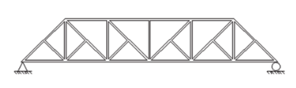

ConcreteBridg LRFR
Contents:
Introduction
Conversion of Older BDF files to Latest Version
How to create a new BDF file
Complete Index of BDF/RPT card types
General Bridge Description Cards
MEMBER CROSS SECTION DESCRIPTION
Special Topics Q&A
ConcreteBridg LRFR
Special Topics Q&A
View page source
Special Topics Q&A
Defining Cross Sections
SECTION01
SECTION02
SECTION03
SECTION04
Girders
GIRDER01
GIRDER02
Floor Beams
Trusses
TRUSS01
TRUSS02
Loads, Trucks, and Load Combinations
Miscellaneaous

MISC02